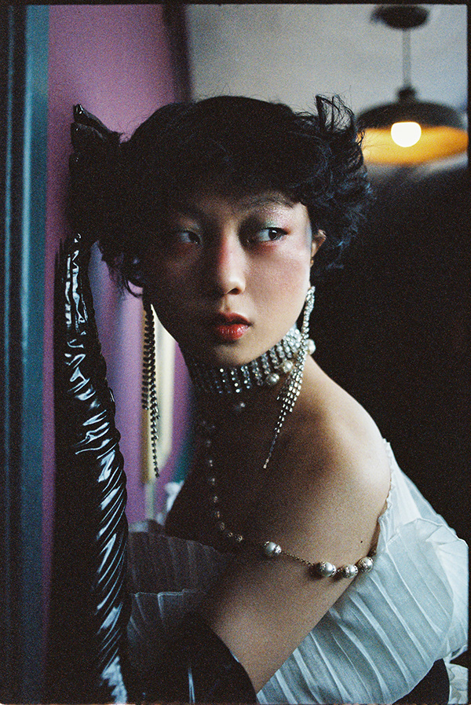
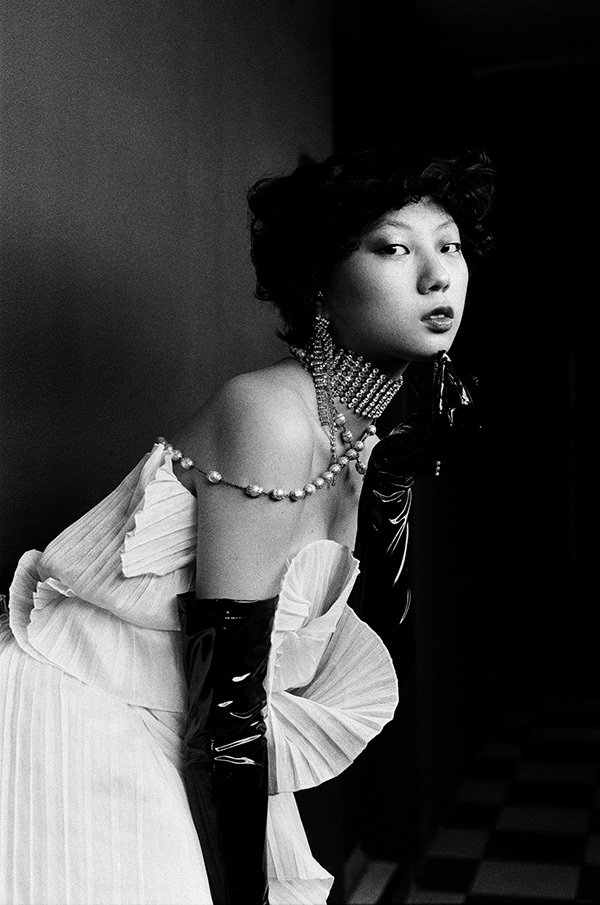
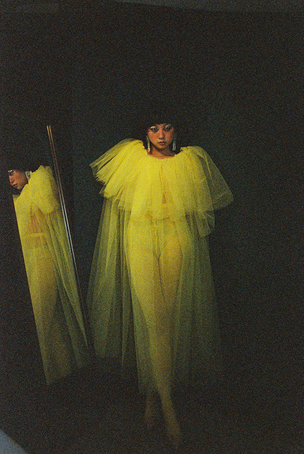
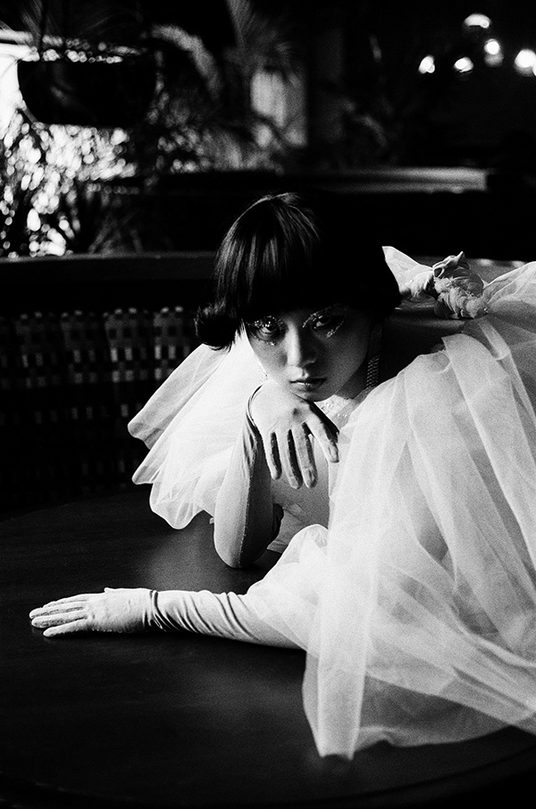
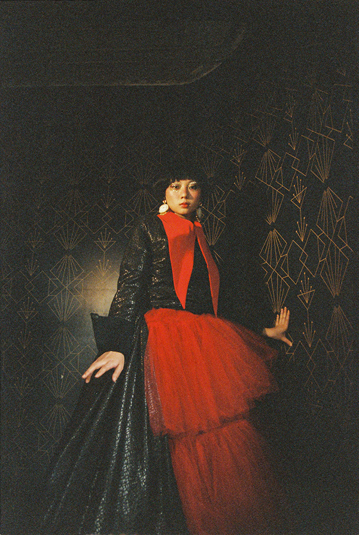
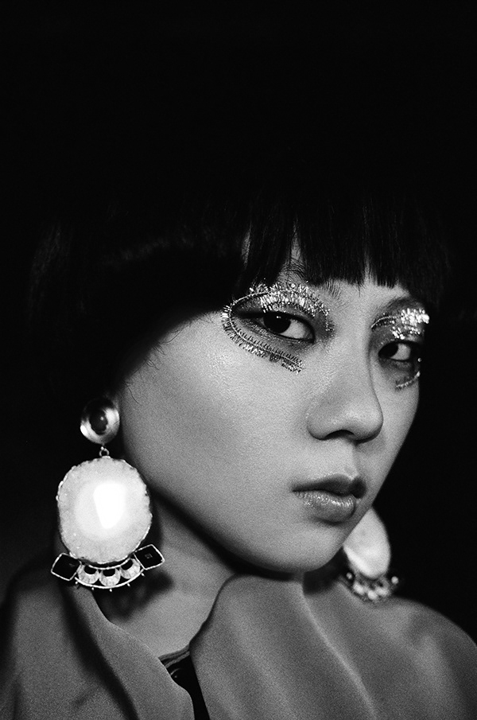

Nann Song for Revista 192 by Milo Miranda, Mexico City, Mexico
Produced a fashion editorial at Hotel Selina, located in downtown Mexico City, featuring emerging Korean model Nann Song in her first professional photoshoot. Commissioned by Revista 192, the project showcased looks from contemporary Mexican designers. The creative direction aimed to evoke nostalgia through colors, silhouettes, and textures, blending cultural history with modern aesthetics.





